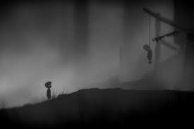

Nessa semana acordei em um lugar desconhecido, sendo perseguida por monstros, estou aprendendo a sobreviver, mas tenho tantas perguntas sobre como e por quê?
Fazer comida
Achei alguns cogumelos
Nessa semana acordei em um lugar desconhecido, sendo perseguida por monstros, estou aprendendo a sobreviver, mas tenho tantas perguntas sobre como e por quê?
Achei alguns cogumelos